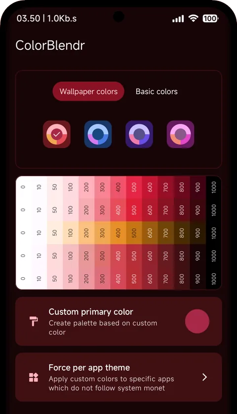
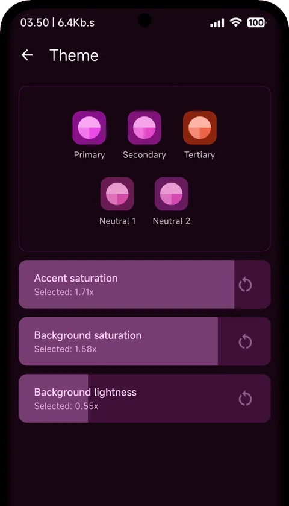
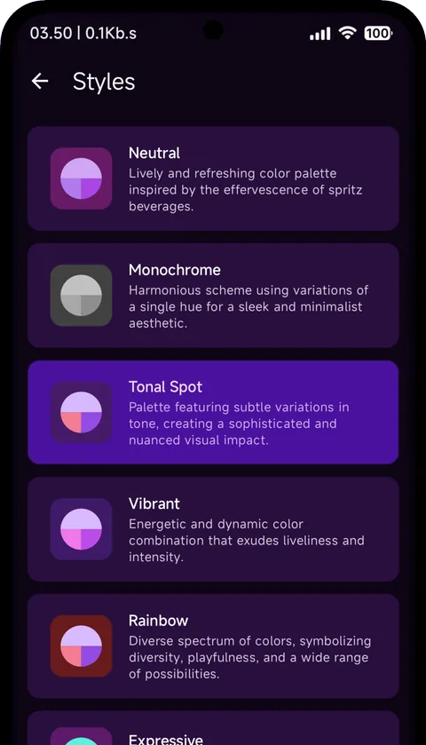
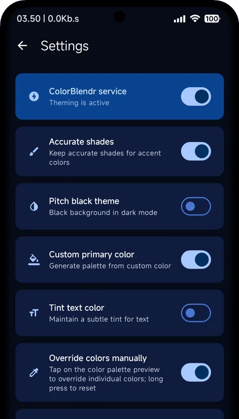

Any seed, any source
Generate palettes from your wallpaper, pick from basic colors, or dial in an exact hex. Everything previews live before it touches the system.
Pick any seed color, tune saturation and lightness, or override individual palette shades. ColorBlendr applies it system-wide on Android 12 and up, at runtime, with no reboot.
Also on F-Droid and IzzyOnDroid
Every surface here is derived on the fly with Material Color Utilities, the same pipeline ColorBlendr runs on your device. Pick a seed, a Monet style, or a color spec and the whole page re-derives.
Each pair is the same screen twice: the palette Android ships with, and the palette the seed above is producing right now.
Generate palettes from your wallpaper, pick from basic colors, or dial in an exact hex. Everything previews live before it touches the system.
Accent saturation, background saturation, and background lightness, from 0 to 200%, set per light and dark mode in CAM16 color space.
Press any shade in any palette row and set it to whatever you want. The whole system follows, one shade at a time.
Tonal Spot, Vibrant, Expressive, Rainbow, Fruit Salad, Monochrome and more, plus color spec 2021, 2025, or 2026 on supported builds.
Pitch black backgrounds for AMOLED, tinted text, and separate configurations for light and dark mode.
Sliders, overrides, saved styles: everything you set up exports to a single file and comes back with one import.
Built in Jetpack Compose with Material 3 Expressive. The app previews every change in its own UI before you apply it to the system.




Any Android 12+ device with Material You works. Root registers overlays directly; Shizuku and Wireless ADB write the system's theme settings through a shell-privileged helper.
Fabricated overlays register directly with the system's overlay service, so palette changes land instantly. The full engine: sliders, per-shade overrides, pitch black, per-app themes.
Grant root once
No root required. A helper process at shell privilege writes the system's theme customization settings directly.
Start Shizuku after each boot
The same shell-privilege path, negotiated on-device over the ADB TLS protocol. Useful where Shizuku isn't installed; no computer needed after pairing.
Pair once over Wi-Fi
Every mode recolors the whole system and keeps your theme across reboots. Root adds the fine-tuning.
| Capability | Root | Shizuku | Wireless ADB |
|---|---|---|---|
| Seed color from your wallpaper | Yes | Yes | Yes |
| Pick any seed color | Yes | Yes | Yes |
| Live preview in the app | Yes | Yes | Yes |
| Tasker integration | Yes | Yes | Yes |
| Monet styles | All, plus custom styles | Most | Most |
| Saturation and lightness sliders | Yes, 0 to 200% | No | No |
| Per-shade overrides | Yes, 11 per row | No | No |
| Pitch black, tinted text, accurate shades | Yes | No | No |
| Custom secondary and tertiary colors | Yes | No | No |
| Color spec version | 2021, 2025, 2026 | No | No |
| Per-app theming | Yes | No | No |
| Community themes | Browse, vote, apply | Browse and vote | Browse and vote |
Browse, vote, and apply palettes people have shared, right inside the app. Hover a card and the page wears it. Tap a card to open it in the gallery.
Shizuku and Wireless ADB modes run shell commands that
write the documented
theme_customization_overlay_packages
secure setting. It's the same mechanism the stock
wallpaper picker uses, with more of its fields filled
in.
Root mode uses the FabricatedOverlay API
to register palette overlays with the system at
runtime. Nothing is written to the system partition;
removing a theme is the same operation as applying
one.
OneUI system apps use Samsung's own palette instead of Material You. ColorBlendr's changes reach Google apps and everything else that honors Monet, but not OneUI's system UI.
They need either a newer Android version or root. Sliders, per-shade overrides, pitch black, and applying community themes are root-mode features; a badge in the app tells you which is which.
Yes. There's no account and no sign-up. Only the palette plus the name and description you type are submitted, and a person reviews every submission before it appears.
Turn off the ColorBlendr service in the app's settings, then uninstall and reboot. Your device returns to its stock wallpaper-derived colors.
Free and open source under GPL-3.0, for any Android 12 or newer device with root, Shizuku, or Wireless ADB.